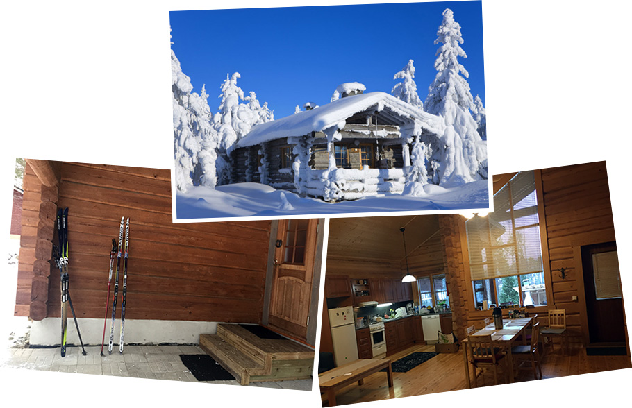
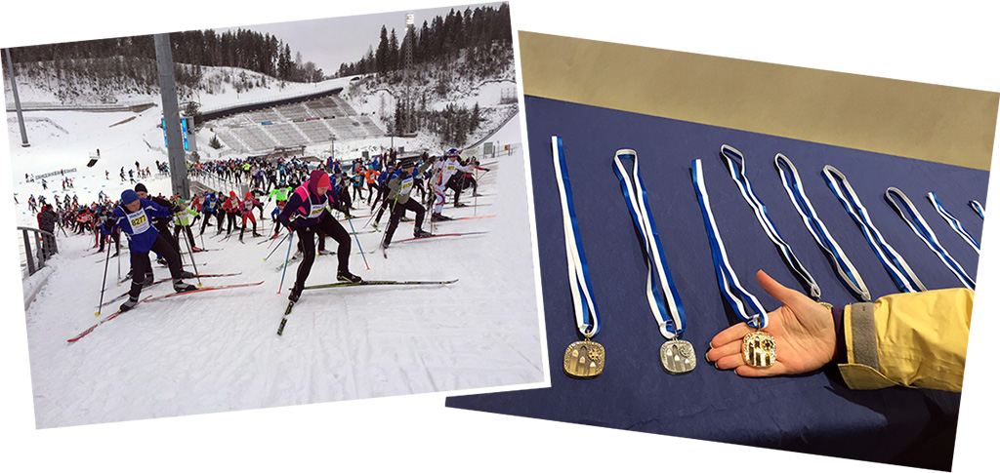
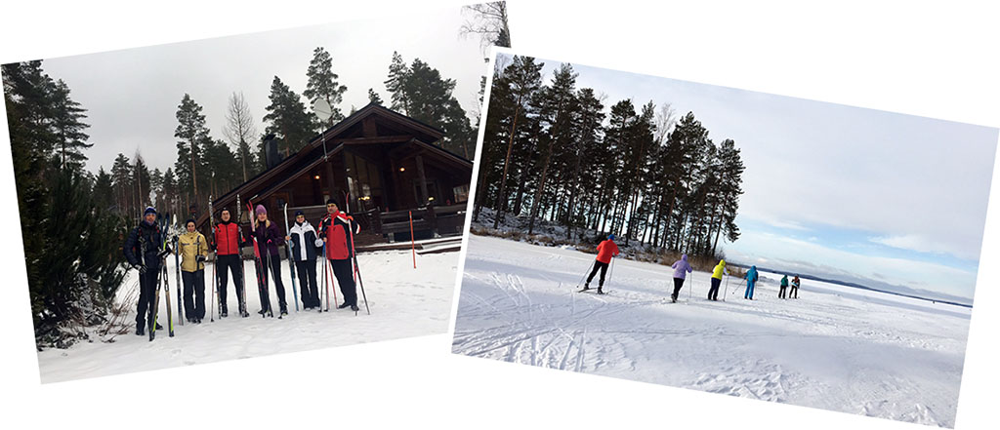
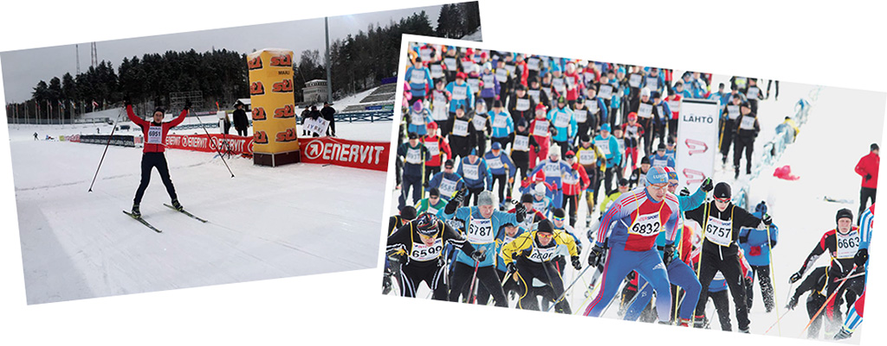

Для тех, кто любит зиму, для тех, кто считает, что снег - лучший компаньон в спорте, кто устал от урбанизации и соскучился по нетронутой зимней природе. А также для всех велосипедистов, мечтающих зимой об активном отдыхе в хорошей компании! Мы едем на лыжный праздник в Лахти, Финляндия!
Мы станем участниками лыжного праздника Finlandia Hiihto, на который сьезжаются любители лыж со всего мира, чтобы почувствовать его атмосферу изнутри, получить медаль участника на финише или просто походить по прекрасно подготовленным трассам или поболеть «за своих». Место знаковое - Finlandia-Hiihto является самым крупным двухдневным спортивным праздником, организуемом в Лахти с 1973 года, а в 1978 году он вошел в состав международной ассоциации лыжных марафонов Worldloppet. Мы пройдем на лыжах по прекрасно подготовленным трассам, которые тут повсеместно, насладиться финской зимней природой, так как жить мы будем в 20 км от Лахти в уютном финском коттедже, на берегу острова на самом глубоком и чистом озере Финляндии – Пяйянне, в красивейшем месте Южной Финдяндии, сформированном ледником - Асиккала.
Итак, едем!
В 6-30 садимся в микроавтобус у Московского вокзала и едем в Финляндию. До границы 200 км, проходим границу с посещением магазина дюти-фри и перекусываем в рыбном кафе-магазине, где можно попробовать финской ухи из семги со сливками, и движемся в Лахти. На лыжном стадионе участники марафона регистрируются и получают пакеты с номерами, чипами, питанием и сувенирами. Если позволит время, попробуем лыжную трассу на зуб или сходим в музей зимних видов спорта. Дальше едем через красивейшие места в наш коттедж на берегу озера. Вечером совместный ужин, сауна, барбекю.

Завтракаем и отправляемся на лыжах по захватывающим дух озерным окрестностям национального парка Пяйянне. Мы будем любоваться красивейшим островом Салосаари, желающие смогут пройтись как по равнинным, так и по холмистым лыжным трассам с волшебными видами.
По пути горячий чай - перекус. Вечером сауна, ужин.

Праздник!
Участие в лыжном марафоне или полумарафоне классическим стилем. Кто не участвует - катается по трассе и болеет «за наших». Вечером возвращаемся в коттедж, ужин, сауна.

Опять праздник!
Участвуем в марафоне или на дистанции 20 км свободным (коньковым) стилем. Остальные либо «болеют за своих», либо катаются по отлично подготовленным лыжным тренировочным трассам.
Вечером ужин и сауна в нашем домике.

Завтракаем, собираем вещи и едем в обратный путь, в Санкт-Петербург. по пути заезжаем в магазины и заправляемся ухой.
Ориентировочное время прибытия к Московскому вокзалу 20 - 22 часа. Рекомендуемое время отправления поездов из Спб - 23 часа и позднее.
NB. Данное описание - это план путешествия. Организаторы сохраняют за собой право на его изменение в зависимости от конкретной ситуации.
Стоимость маршрута уточняйте на странице КАЛЕНДАРЬ, там же можно подать заявку на участие.
{/block}